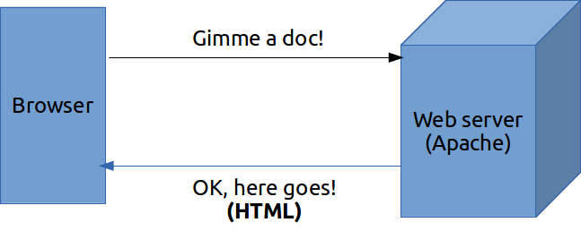
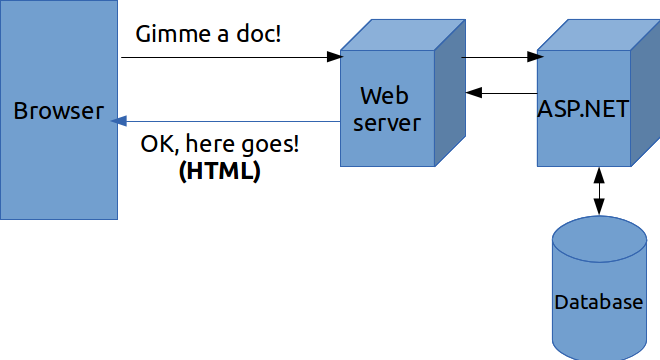
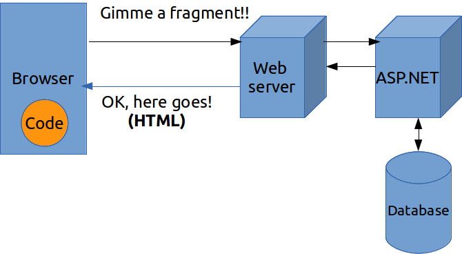
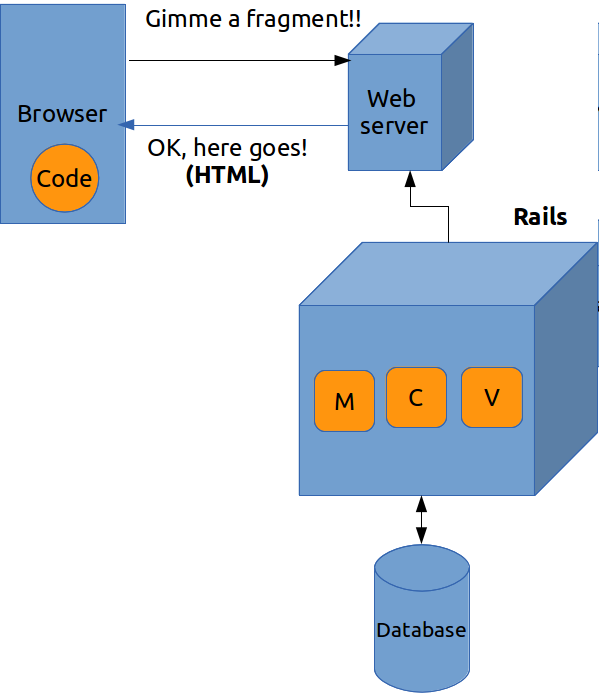
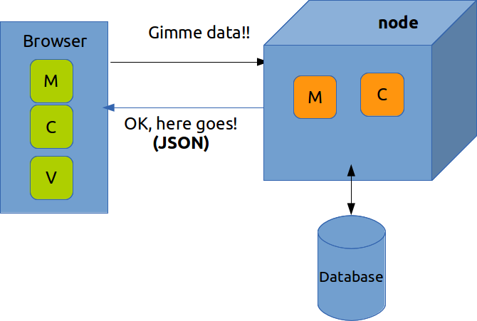
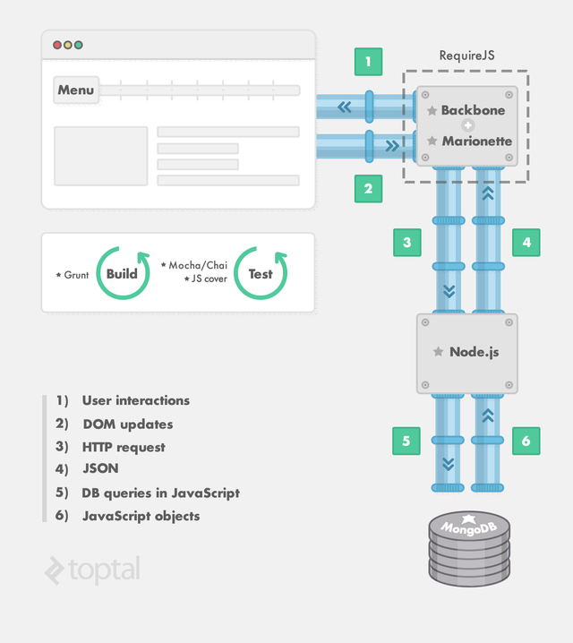
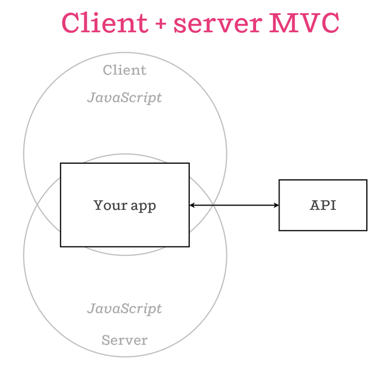

Node.js Introduction
Speaker : Claude Jiang
Agenda
- What's Node
- Node Web development
- Who use Node
What's Node
Node.js is a platform built on Chrome's JavaScript runtime for easily building fast, scalable network applications. Node.js uses an event-driven, non-blocking I/O model that makes it lightweight and efficient, perfect for data-intensive real-time applications that run across distributed devices.
Node VS Java platform
- Language
- Platform
- Frameworks & Tools
Talk is cheap. Show me the code.
- Linus Torvalds
Hello, Server side javascript
//load third party module 'colors'.
var colors = require('colors');
//print out 'Hello Node.js' with colorized.
console.log("Hello Node.js".rainbow);
- Chrome Javascript runtime - V8
- API for server side
- NPM
Hello, Asynchronous I/O Programming
$.ajax({
url: 'http://www.claudejiang.com/echo',
data: {param1: 'claude'},
success: function(data){
...
}
});var fs = require('fs');
fs.readFile('text.txt', {encoding: 'UTF-8'}, function(err, data){
if(err) throw err;
console.log(data);
});
console.log('end.');- Asynchronous I/O APIs
- Asynchronous Programming
- Node style callback
Hello, Buffer/Stream/Event Emitter
var fs = require('fs');
var rs = fs.createReadStream(__filename);
rs.on('data', function(data){
// console.log(data);
console.log(data.toString());
});
rs.on('end', function(){
console.log('end');
});
// rs.pipe(process.stdout);
- Use Event(Sub/Pub) for Async IO
- Buffer
- Stream/pipe
- Unix/Linux philosophy
Hello, TCP Programming
// load net module
var net = require('net');
// create a tcp server
var server = net.createServer(function (socket) {
socket.on('data', function(data){
socket.pipe(socket);
});
});
// bind to port 7000 on localhost
server.listen(7000, "localhost");
console.log("TCP server listening on port 7000 at localhost.");
Hello, Web Programming
var http = require('http');
http.createServer(function (req, res) {
res.writeHead(200, {'Content-Type': 'text/plain'});
res.end('Hello World\n');
}).listen(1337, '127.0.0.1');
console.log('Server running at http://127.0.0.1:1337/');
Hello DIRTy, Socket.io Programming
var io = require('socket.io').listen(80);
io.sockets.on('connection', function (socket) {
socket.emit('news', { hello: 'world' });
socket.on('my other event', function (data) {
console.log(data);
});
});
<script src="/socket.io/socket.io.js"></script>
<script>
var socket = io.connect('http://localhost');
socket.on('news', function (data) {
console.log(data);
socket.emit('my other event', { my: 'data' });
});
</script>
- data-intensive real-time applications
- chat/communication/stream/mongodb/proxy
Technique
- JavaScript
- Asynchronous I/O Programming
- NPM
JavaScript
- Performance - V8
- CommonJS
- Multi-paradigm programming
- Asynchronize friendly
- Atwood's law
Atwood's law
Any application that can be written in JavaScript, will eventually be written in JavaScript.
- Linux VM: jsLinux
- Emulator: GameBoy emulator
- Cloud IDE: Nitrous Cloud9 IDE
- Testing: Browserling PhantomJS
- Client Dev: Node-webkit
- Mobile Dev: Phonegap
- Game Dev: Pomelo WebGL asm.js
- Hardware: Tessel
Asynchronize I/O Programming
- Why non-blocking io
- Event Loop
- Asynchronize Programming
Why non-blocking io

Synchronize block
var fs = require('fs');
var path = require('path');
var files = fs.readdirSync('.'); // cpu wait
files.forEach(function(file){
var stat = fs.statSync(file); // cpu wait
if(stat.isFile()){
var str = fs.readFileSync(file, {encoding: 'utf8'}); // cpu wait
console.log(file + ":" + str.length);
}
});
- CPU浪费在等待IO上
Asynchronize non-block
var fs = require('fs');
var path = require('path');
fs.readdir('.', function(err, files){
if(err) return console.log(err);
var processed = 0;
files.forEach(function(file){
fs.stat(file, function(err, stat){
if(stat.isFile()){
fs.readFile(file, {encoding: 'utf8'}, function(err, str){
console.log(file + ":" + str.length);
});
}
});
});
});
- CPU不需要等待IO完成，通过回调或者事件通知完成
- Single Javascript thread
- Pyramid of doom(Callback hell)
Event Loop

Asynchronize Programming
- Callback
- Event(Sub/Pub) - Event Emitter
- Promise/Deferred
- Library(Async/Step/When/Q/wind)
NPM
- Sharing is encouraged
NPM
- npm install <module name>
- npm install -g <module name>
- Module lookup
- Private NPM
Node.js Web Development
- Web Development History
- Full stack JS Web Dev
Web Development History
Static HTML content
dynamic HTML
Ajax
Server side MVC
Client side MVC
Full stack JS Web Dev
- MEAN stack
Isomorphic JavaScript
- Meteor.js
Who use Node
- Microsoft
- Groupon
- Paypal
- Yahoo
- Taobao
- ...
Thank you
I hear and I forget. I see and I remember. I do and I understand.
不闻不若闻之，闻之不若见之，见之不若知之，知之不若行之；学至于行之而止矣。- 荀子《儒效篇》